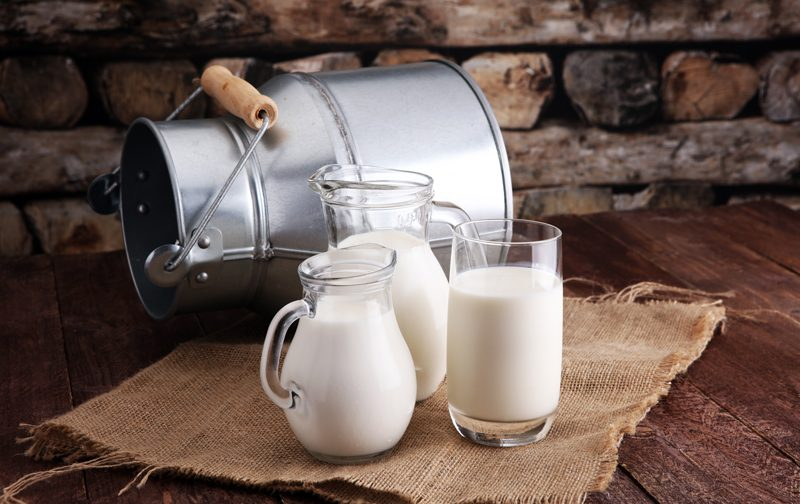
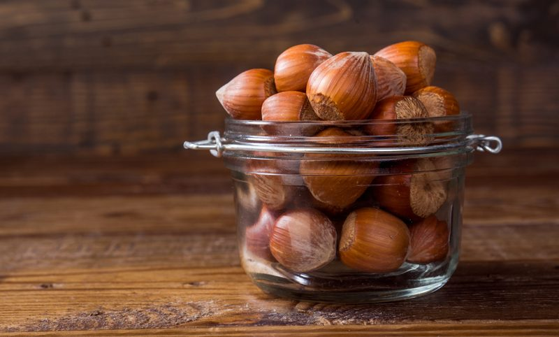

Homemade Nut Milk
Homemade Nut Milk
~ raw, vegan, gluten-free, Paleo ~
It has been interesting to watch the craze out in the market regarding milk substitutes. Even quick stores are carrying nut, rice, and soy milks. They are pasteurized of course but none the less everyone is becoming more aware of milk intolerance.

Homemade is the best!
Making your own nut milks, well shoot, there just isn’t anything out on the market that comes close in flavor. The beauty of making your own is that you can control the sweetness (if even desired), flavoring and the consistency. For instance, my husband likes his nut milk a touch creamier than milk, almost like a 1/2 & 1/2 consistency. We like to slightly sweeten ours as well, but you don’t have to.
A friend of ours is spending the next few days with us who is gluten intolerant. So this morning I offered him a bowl of gluten-free cereal with some freshly made nut milk. He immediately said yes, but as I was gathering up the dishes, etc. , he politely asked if we had regular milk. My husband said yes but asked if he would like to try a swig of the nut milk just to try it. He agreed and said, “Oh man, I will have that!”

I am going to share very detailed information with you on how to make nut milks. Please don’t let the length of it scare you off. It is SO easy, but I wanted to share everything that I have learned throughout the years. Some of you are veterans when it comes to making nut milk, but some of you are new… for you, I don’t want you to walk away not understanding just how wonderful this process an the end product can be.
Why I add sunflower lecithin.
Sunflower lecithin is made up of essential fatty acids and B vitamins. It helps to support healthy function of the brain, nervous system, and cell membranes. It also lubricates joints; helps break up cholesterol in the body. It comes in two forms, powder and liquid. I prefer the raw powdered sunflower lecithin. Setting aside all the nutritional benefits, it is a natural emulsifier that binds the fats from nuts with water creating a creamy consistency.
Yields 4 cups
- 4 cups water
- 1 cup raw nuts
- 1 Tbsp sunflower lecithin, powder or liquid
Preparation:
Soaking process:
- Place the nuts in a glass bowl or stainless steel bowl and cover with two cups of water.
- Do not use plastic bowls for soaking.
- Always make sure you add enough water to keep the nuts covered, as they absorb water, they plump up.
- Keep the bowl at room temperature and cover with a breathable cloth. If something comes up and you won’t be able to use the nuts within the 24 hour period, store them in the fridge, changing the water 2x a day.
- If there are any floating nuts, toss them. That can be an indicator of the nuts being rancid. Better to be safe than sorry. Think of them as, “floaters are bloaters.”
- Add 1/4 tsp of Himalayan pink salt; this helps activate enzymes that de-activate the enzyme inhibitors.
- Soak for 8-24 hours.
- This is great not only for reducing phytic acid but also softens the nuts, making them easier to blend into a smooth, silky texture.
- Skipping the soaking process will result in less creamy milk.
- If you already have soaked/dehydrated nuts in the freezer or fridge, I suggest soaking them again for the purpose of just softening them.
Blending process:
- Once the nuts are done soaking, drain, rinse, and discard the soak water.
- Do not reuse the soak water in the milk-making process. This is full of the phytic acid/enzyme inhibitors that were drawn out during the soaking process.
- Place the nuts in a high-powered blender along with the water.
- Start the blender on low and work up to high, then blend for 30-60 seconds or until the nuts have been pulverized.
- A high-powered blender will accomplish the job much easier.
- If you don’t own one such as a Vitamix or Blendtec, you might have to blend for 1-2 minutes.
- Do not sweeten or add other ingredients until you have strained the milk from the pulp. The pulp can be used in other recipes and by waiting to add the other ingredients, it will remain neutral tasting so it can adapt to any other recipe you use it in.
Straining the milk:
- Turn the bag inside out and keep seams on the outside for easier straining, cleaning, and faster drying.
- Place the nut milk bag in the center of a large bowl.
- Instead of a nut bag, you can drape cheesecloth over the edges of the bowl and pour the milk through it. I find this process messier, and it doesn’t seem to filter it as well.
- Desperate? Don’t have a nut bag or cheesecloth while you are vacationing in France? Take off one of those silky-French knee-high nylons, wash it, and pour the milk through it. I am here, always thinking of you. :)
- With one hand holding the nut bag, pour the milk into the bag. Lift the bag, and the milk will start to flow through the mesh holes in the bag. The finer the mesh, the more filtered the milk will be.
- Gather the nut bag (or cheesecloth) around the almond meal and twist close.
- Squeeze the nut pulp with your hand to extract as much milk as possible.
- Do not toss the nut pulp. Freeze and dehydrate it, which can be used in other recipes such as smoothies, crusts, cookies, crackers, cakes, or raw breads.
Flavoring:
- I recommend lecithin and any flavoring to your milk after the pulp has been removed. That way the pulp remains neutral in flavor for other recipes.
- Liquid sweeteners: you can sweeten nuts milk with the sweetener of your choice. Start with 1 tsp and build up. For a sugar-free option, use NuNaturals liquid stevia.
- Dried fruit: Medjool dates add a wonderful caramel-like flavor to nut milks. You might want to run it back through to the nut bag to filter any small bits out. You can use all sorts of fresh or dried fruits for this.
- Spices: To liven things us, add cinnamon, cloves, cardamom, pumpkin spice… you name it.
- Extracts: vanilla, or any other flavoring.
- Raw cacao powder
Thickeners and Emulsifiers: (add these after the milk has been strained)
- Lecithin – thickener and emulsifier
- Add up to 1 Tbsp per every 2-3 cups of water used.
- I highly recommend powdered sunflower lecithin, but soy can be used if you use it.
- Coconut butter/manna
- Add up to 1 Tbsp per every 2-3 cups of water used.
- Do not use coconut oil. It hardens when chilled and may create small gritty pieces in the milk
- Nut butter:
- Add up to 1 Tbsp per every 2-3 cups of water used
- If using store-bought, watch for added ingredients such as salt.
Storing and expiration:
- Store the milk in an airtight glass container such as a mason jar.
- Always label the contents and the date that it was made.
- If for some reason separation still does occur, just shake the jar before serving, and the milk will come back together.
- Fridge – The milk can last anywhere from 3-5 days in the fridge.
- If the nut milk prematurely sours it may be from the unclean blender, nut milk bag or poor quality nuts.
- Freezer – There are several ways to store nut milks in the freezer. Freeze for up to 3 months.
- Pour the milk into ice cubes trays and freeze. This is great for plopping into smoothies.
- Freeze in 1 1/2 pint freezer-safe jars.
- It is important that you only freeze glass jars that are made for freezing. I have tested this, and sure enough, I have had jars crack on me, resulting in throwing everything in the trash. Sad day.
- You can use smaller jars for better portion control if you don’t plan on using a full 1 1/2 pints worth.
- Pay attention to the “maximum freeze line” indicated on the jar. If you don’t see that, then it’s another indicator that the jar isn’t safe to place in the freezer.
Nut bag maintenance:
- It is important to keep the nut milk bag clean!
- Wash with organic, scent-free soap, such Dr. Bronners. Do not use laundry soap. (always refer to the manufacturers cleaning method as well)
- Rinse well air dry. Ideally in the direct sun to receive free sterilizing from the warm rays. Nylon nut milk bags should not be placed in the sun as the ultraviolet rays can damage the nylon.
- Do not hang the bags outside on the clothesline to dry. We don’t want an air-raid of bird poop coming down on it.
- Proper bag storage –
- I like to roll mine up and store them in a glass jar. This will help keep it clean, protect it from dust, and accidental hole damage. A holy bag has no purpose when it comes to nut milk making.
- Also, if you use nut bags for multiple reasons, it would be a good idea to store them in separate jars, labeling them for their purpose, such as; nut milks, juicing, sprouting.
Get creative!

Brazil Nuts
- Brazil nuts are a great source of selenium. They have about 2500 times the amount of selenium than any other nut. Selenium is a powerful antioxidant that helps protect against disease. Selenium also slows down the aging process and boosts the immune system!
Pecans
- Pecans are a good source of fiber and contain iron, calcium, vitamins A, B, and C, potassium, and phosphorous.
Macadamia Nuts
- Macadamia nuts are high in fiber, taste great, and have no cholesterol. They also have a very high proportion of monounsaturated fats (which are the good fats!).
Milk comparisons per 240 ml serving
- Almond milk has 60 calories and has 2.5 grams of fat.
- 2% milk has 121 calories and has 4.4 grams of fat.
- Rice milk has 120 calories and has 2 grams of fat
- Plain soymilk has 100 calories and has 4 grams of fat.
© AmieSue.com